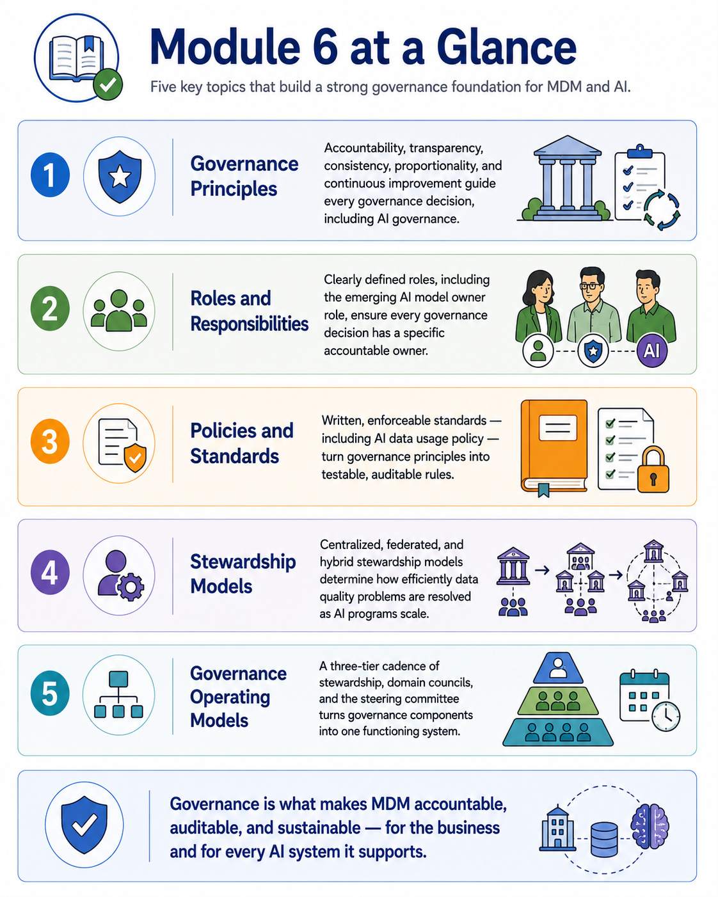
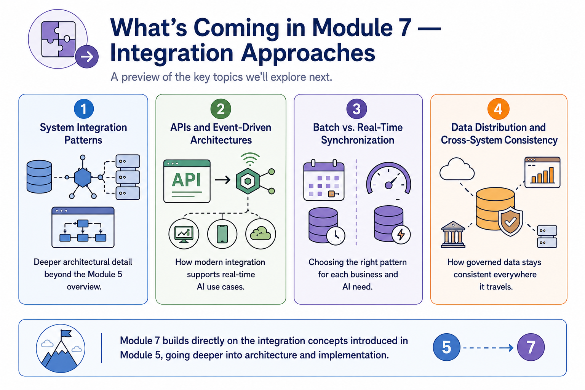
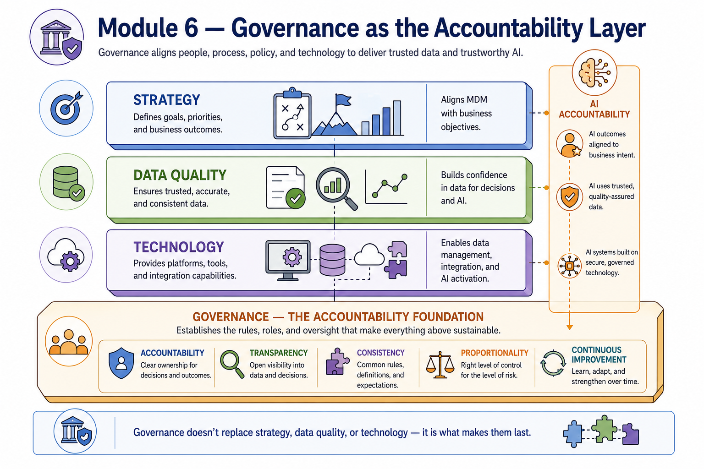

Module Recap
Module support notes
What This Module Covered
This module established governance as the accountability layer that makes every other MDM discipline durable. Strategy defines intent, data quality assessment reveals reality, technology provides capability — and governance is what ensures all of it remains consistent, accountable, and trustworthy as people change roles, priorities shift, and AI programs scale.
The principles, roles, policies, stewardship models, and operating structures covered in this module are not bureaucratic overhead. They are the mechanism by which an organization can confidently say who is accountable for its data — and for the AI systems that depend on it.
- Governance Principles — accountability, transparency, consistency, proportionality, and continuous improvement guide every governance decision, including AI governance
- Roles and Responsibilities — clearly defined roles, including the emerging AI model owner role, ensure every governance decision has a specific accountable owner
- Policies and Standards — written, enforceable standards including AI data usage policy turn governance principles into testable, auditable rules
- Stewardship Models — centralized, federated, and hybrid stewardship models determine how efficiently data quality problems are resolved as AI programs scale
- Governance Operating Models — a three-tier cadence of stewardship, domain councils, and the steering committee turns governance components into one functioning system

The AI Accountability Thread Through Module 6
A deliberate choice in this module was to avoid presenting AI governance as a parallel structure bolted onto traditional data governance. Instead, every governance component — principles, roles, policies, stewardship, and operating models — was shown carrying an explicit AI accountability dimension.
This reflects how mature organizations are actually building AI governance in practice: not as a separate committee or policy silo, but as a natural extension of the data governance capabilities they have already built. Responsible AI governance is, in large part, mature data governance applied with appropriate rigor to AI-specific risks.
Note
AI accountability runs through all five governance components: Principles provide proportional rigor for high-risk AI use cases; Roles formalize AI model owner accountability; Policies include dedicated AI data usage standards; Stewardship creates faster escalation paths for AI-critical exceptions; Operating Models embed AI governance at every tier. This is one integrated system, not two parallel ones.

Preparing for Module 7
Module 7 returns to the integration topic introduced briefly in Module 5 and explores it in significantly greater depth. Where Module 5 established why integration matters for MDM and AI readiness, Module 7 examines the specific architectural patterns, technologies, and synchronization approaches organizations use to implement it.
This includes the real-time and event-driven patterns that are becoming increasingly important as AI systems require fresher, more current governed data to operate reliably.
Tip
As you move into Module 7, carry the governance operating model from this module into the integration design conversations. Integration patterns are not just technical decisions — they carry governance implications. Who owns an event stream? Who is accountable when a real-time AI pipeline receives stale data? The answers to those questions should already be defined in the governance structure Module 6 established.

Governance doesn't replace strategy, data quality, or technology — it is the foundation that makes them last.
